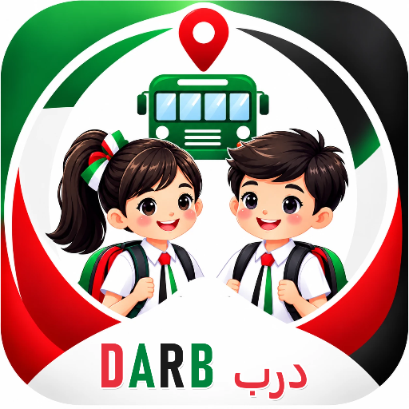

DARB · Privacy Policy
Darb is a school transport app used by schools in the United Arab Emirates. It helps parents follow their child's school bus, helps bus crews run each trip safely, and helps the school's transport office manage routes. This policy explains what information Darb uses and why. The school that uses Darb decides how its students' information is used (it is the "controller"); Darb processes it on the school's behalf.
What information we use
- Students (entered by the school): name in English and Arabic, class, bus route and stop, bus card number, an optional photo, and any medical or safety note the school or parent adds for the crew.
- Trips: when each child gets on and off the bus, absences, and messages between parents and the crew.
- Health and safety reports made by the bus crew (for example a child feeling unwell), shared with that child's parents, the school nurse and the transport office.
- Bus location: the position of the bus during a trip, taken from the crew phone. We do not track parents' or children's phones.
- Parents and staff: name, email address, phone number, language, and the device token used to send alerts. For afternoon pickup, the names, relations and phone numbers of people a parent allows to collect their child.
- Transport fees the school records (amount, due date, paid or not). Darb does not take card payments.
Who can see it
- Parents see only their own children.
- The driver and bus supervisor see the children on the routes they work, including photos and safety notes.
- The school nurse sees health reports and medical notes at their school.
- The school's transport office sees their own school's information.
- Student photos are stored privately and are shown only to the people above, through short-lived links.
We do not sell information, show advertising, or share information with anyone else, except the service providers that run the app: Supabase (database and storage), Expo and Google Firebase / Apple Push Notification service (to deliver alerts to phones). They process information only to provide these services.
How long we keep it
Trip records are kept for the school year so the school can answer questions about a journey, then deleted or anonymised at the school's request. Bus positions are only kept for the trip in progress. A parent can delete their own account in the app (Account → Delete my account); this removes their login, contact details, alerts and the pickup people they added. The school keeps its own student records.
Your choices and rights
You can update your name and phone number in the app, choose English or Arabic, switch off alerts in your phone's settings, and delete your account. To see, correct or remove information about your child, contact your school's transport office. These rights follow the UAE Personal Data Protection Law (Federal Decree-Law No. 45 of 2021).
Security
All information is sent over encrypted connections. Every table is protected by rules that check who is asking before any information is returned, and changes to trips can only be made through checked functions.
Children
Children do not use Darb themselves. Their information is added by their school and seen by their parents and the school's staff.
Contact
For questions about your child's information, contact your school's transport office. For questions about Darb itself: [support email to be confirmed].
Draft: to be reviewed by a UAE lawyer and the school before launch.
سياسة الخصوصية لتطبيق درب
درب تطبيق للنقل المدرسي تستخدمه المدارس في دولة الإمارات العربية المتحدة. يساعد أولياء الأمور على متابعة حافلة أطفالهم، ويساعد طاقم الحافلة على تشغيل كل رحلة بأمان، ويساعد مكتب النقل في المدرسة على إدارة المسارات. المدرسة التي تستخدم درب هي التي تقرر كيفية استخدام بيانات طلابها، ودرب يعالجها نيابة عنها.
البيانات التي نستخدمها
- الطلاب (تدخلها المدرسة): الاسم بالعربية والإنجليزية، الصف، مسار الحافلة ومحطتها، رقم بطاقة الحافلة، صورة اختيارية، وأي ملاحظة طبية أو ملاحظة سلامة للطاقم.
- الرحلات: وقت صعود كل طفل ونزوله، الغياب، والرسائل بين أولياء الأمور والطاقم.
- تقارير الصحة والسلامة التي يقدمها طاقم الحافلة، وتُشارك مع ولي أمر الطفل وممرضة المدرسة ومكتب النقل.
- موقع الحافلة أثناء الرحلة من هاتف الطاقم. لا نتتبع هواتف أولياء الأمور أو الأطفال.
- أولياء الأمور والموظفون: الاسم والبريد الإلكتروني ورقم الهاتف واللغة ورمز الجهاز لإرسال التنبيهات، وبيانات الأشخاص المسموح لهم باستلام الطفل.
- رسوم النقل التي تسجلها المدرسة. لا يقبل درب الدفع بالبطاقات.
من يمكنه رؤية البيانات
يرى ولي الأمر أطفاله فقط، ويرى السائق ومشرفة الحافلة أطفال مساراتهم، وترى ممرضة المدرسة التقارير الصحية في مدرستها، ويرى مكتب النقل بيانات مدرسته. تُحفظ صور الطلاب بشكل خاص. لا نبيع البيانات ولا نعرض إعلانات، ونشاركها فقط مع مزودي الخدمة الذين يشغّلون التطبيق (Supabase وExpo وGoogle Firebase وخدمة إشعارات Apple).
مدة الاحتفاظ وحقوقك
تُحفظ سجلات الرحلات خلال العام الدراسي ثم تُحذف أو تُجهّل بطلب من المدرسة. يمكن لولي الأمر حذف حسابه من التطبيق (الحساب ← حذف حسابي). للاطلاع على بيانات طفلك أو تصحيحها أو حذفها تواصل مع مكتب النقل في المدرسة، وفقًا للمرسوم بقانون اتحادي رقم 45 لسنة 2021 بشأن حماية البيانات الشخصية.
التواصل
لأسئلة حول بيانات طفلك تواصل مع مكتب النقل في مدرستك. لأسئلة حول درب: [بريد الدعم قيد التأكيد].
مسودة: تتطلب مراجعة محامٍ في الإمارات والمدرسة قبل الإطلاق.